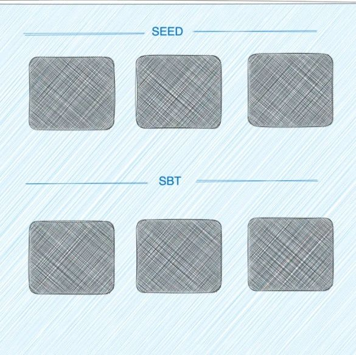

招募｜SNS 和 SeePASS 社区组
作者: SeeDAO
确定 SNS 是否开放售卖、售卖条件、售卖定价等等问题


按照 SeeDAO 白皮书：SeeDAO 的身份协议由 SNS（ SeeDAO Name Service ）和档案协议 SPP（SeeDAO Profile Protocol）组成。当一个人开始拥有自己的 SeeDAO Name 时，他的一切关系和历史才能在城邦的技术系统中被记录和承认，也才算真正进入城邦的大门。而当此人在城邦中开始行动，留下自己的痕迹与作品时，他在城邦内的个人页面 SeePASS（ 基于 SPP 构建的应用 ）也将随之更新。目前， Polis 项目组已经初步完成 SNS 和 SeePASS 的合约开发和代码开发，需要在 11.16 SeeDAO 伊斯坦布尔大会上进行发布。SNS 将面向部分社区成员进行预测，发放预览版本的 SNS 域名，该域名将使用在所有 SeeDAO 生态应用上。SNS 域名将是 tanghan.seedao, baiyu.seedao 的样式。此外，SNS 持有者将拥有自己专属的 SeePASS 个人名片页面，展示个人在 SeeDAO 中的身份和成就等信息，包含个人 SNS 域名、SCR 积分情况（当前数量、当前级别、升级进度、距离下一级所需积分），在 SeeDAO 中的身份（ 节点、市政厅成员等等 ）、个人社交媒体、持有的 SEED、拥有的 SBT。同时，SNS 持有者将会免费领取实体 SeePASS 卡（ NFC 卡片），用于线下社交。由于开发已经接近完成，目前主要是需要推向社区早期体验成员。- 开始宣传 SNS 的规则、时间节点，SeePASS 预热
- 设计 SeePASS 移动端网页样式，需要兼容 PC 端
- 10.10 提供 SNS 和 SeePASS 测试版
- 制定方案向社区收集早期体验用户，并向开发团队 Polis 提供域名、地址的登记表，由开发团队向登记的地址发放其申请的域名
- 10.23 生成 SeePASS 的链接信息，安排制作 NFC 卡
- 协助做对 SNS 和 SeePASS 测试版本进行测试
1. 进一步面向全社区发放 SNS 和 SeePASS2. 确定 SNS 是否开放售卖、售卖条件、售卖定价等等问题a. 职责：设计 SeePASS 移动端网页样式，需要兼容 PC 端；d. SeePASS 网站页面设计初稿，仅供参考，需要设计师另行设计。
e. 设计需求由市政厅品牌组结合社区意见来出和最后把关。